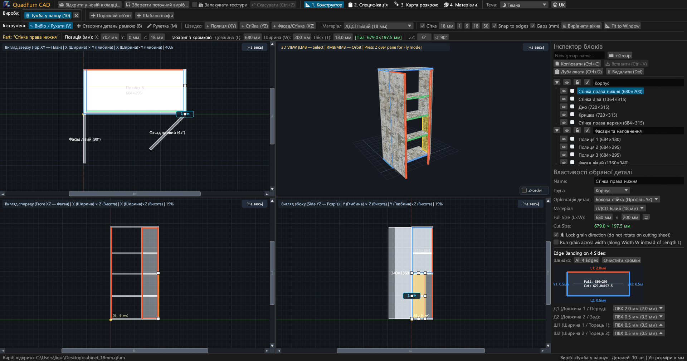
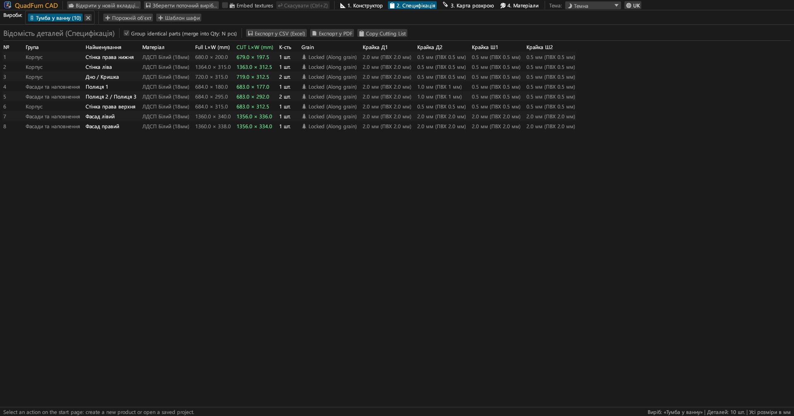
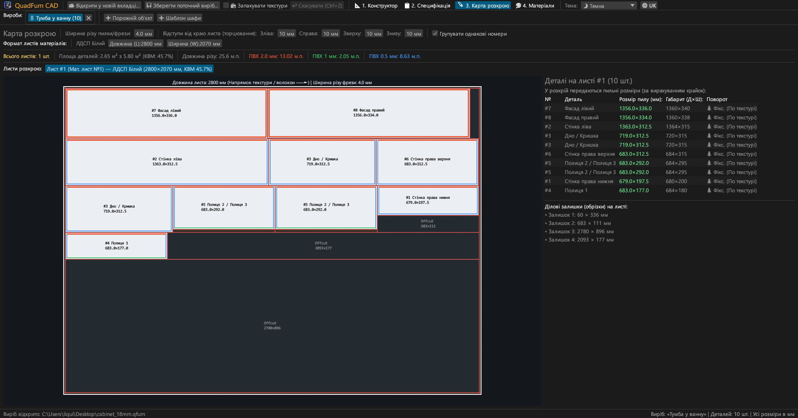
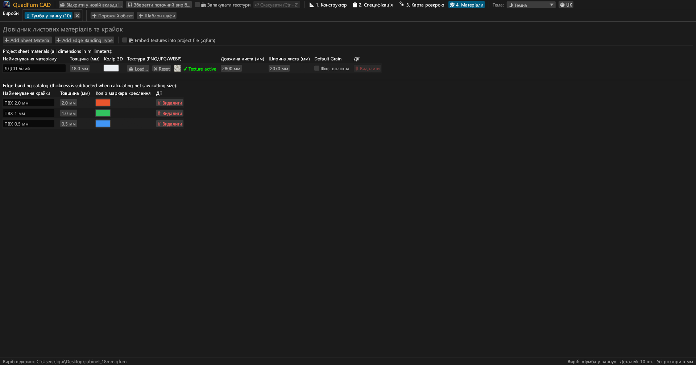
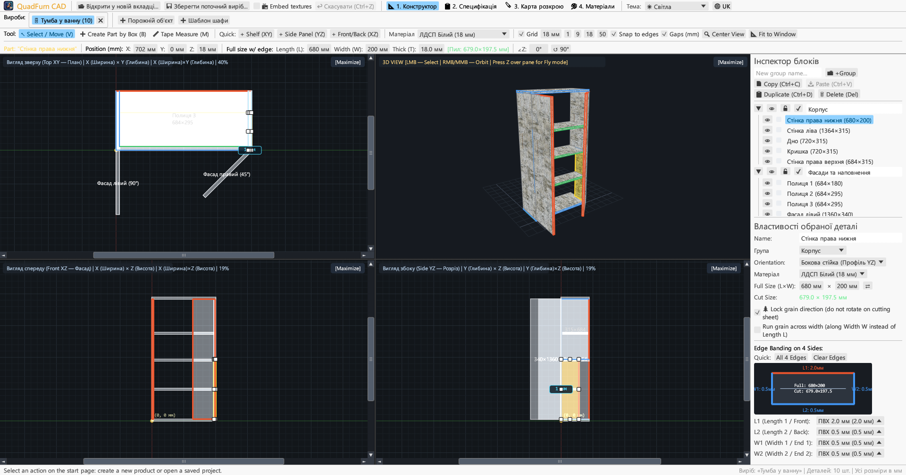
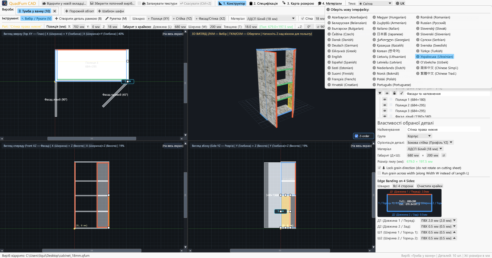

Швидкий настільний CAD для меблевиків. Синхронне 4-видове моделювання, миттєве введення точних розмірів з калькулятором, автоматичний вичет крайки та оптимізація карт розкрою.

Поєднує креслення у 4 проєкціях, точне числове позиціонування та гільйотинний розкрій у єдиному додатку.
Одночасна робота в трьох ортогональних проєкціях (Зверху XY, Спереду XZ, Збоку YZ) зі смугами прокрутки, магнітною прив'язкою та інтерактивним 3D-вікном.
Миттєве введення числових координат (X, Y, Z), габаритів (Д × Ш × Т) та кута (∠Z) із вбудованим калькулятором: введення 600-4 або (800-36)/2 прямо у поле.
Призначення крайки ПВХ/АБС (0.4–2.0 мм) на будь-яку з 4 граней (Д1, Д2, Ш1, Ш2) з розрахунком пиляльних розмірів для форматно-розкрійного верстата.
Швидкий движок розкрою з урахуванням напрямку текстури дерева, товщини пропилу пили, відступів обрізки країв листа та обліку ділових залишків.
Робота з кількома виробами одночасно у вкладках. Копіювання та вставлення деталей між проєктами з автоматичним перенесенням матеріалів і крайок.
Експорт готового до друку альбому A4 Альбомна: специфікація деталей, креслення 4 проєкцій, карти розкрою листів та відомість матеріалів з запасом +15%.





Повністю автономні бінарні файли без зовнішніх залежностей.
Портативний файл з іконкою, не потребує встановлення.
sudo apt install ./quadfurn_0.2.6_amd64.deb
Універсальний бандл QuadFurn.app для Apple Silicon (M1–M4) та Intel x86_64.
| Клавіша | Дія | Область |
|---|---|---|
| V | Інструмент Вибір / Зсув (переміщення, 8 маркерів розміру, рамка виділення) | 2D-проєкції |
| B | Створити деталь рамкою (розтягування прямокутника у поточній площині) | 2D-проєкції |
| M | Лінійка (вимірювання точних відстаней ΔX, ΔY, L у міліметрах) | 2D-проєкції |
| Z | Режим польоту від першої особи (Noclip з керуванням WASD + мишею) | 3D-вікно |
| ← → ↑ ↓ | Зсув вибраних деталей на крок сітки (Shift — подвійний крок) | 2D-проєкції |
| Ctrl + C / V | Копіювати / вставити вибрані деталі (працює між вкладками виробів) | Усі вкладки |
| Ctrl + D | Дублювати вибрані деталі зі зміщенням | Активний проєкт |
| Ctrl + S | Зберегти виріб у файл .qfurn / .json | Активний проєкт |
| Ctrl + Z | Скасувати останню дію (до 40 кроків історії) | Активний проєкт |
| Delete / Backspace | Видалити вибрані деталі | Активний проєкт |